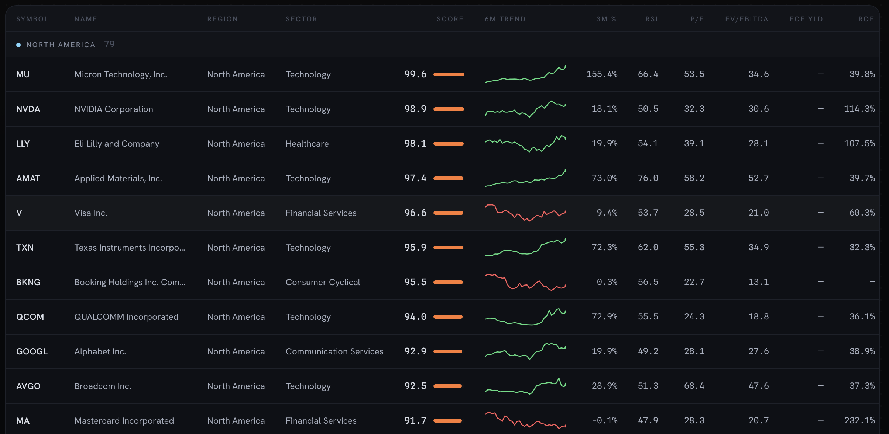
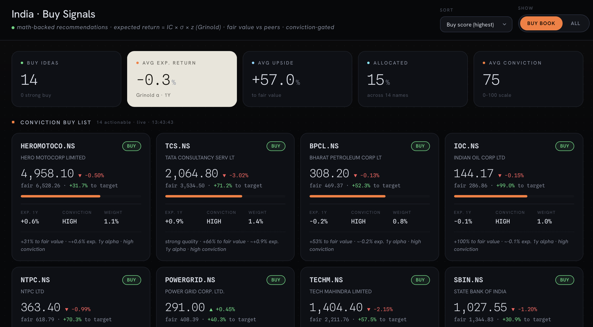
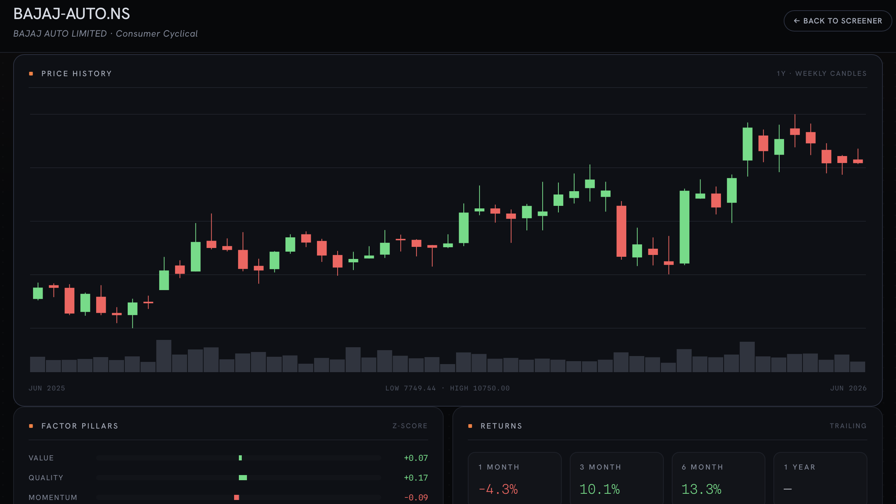
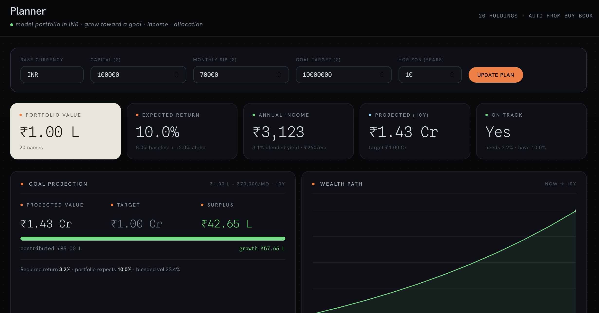
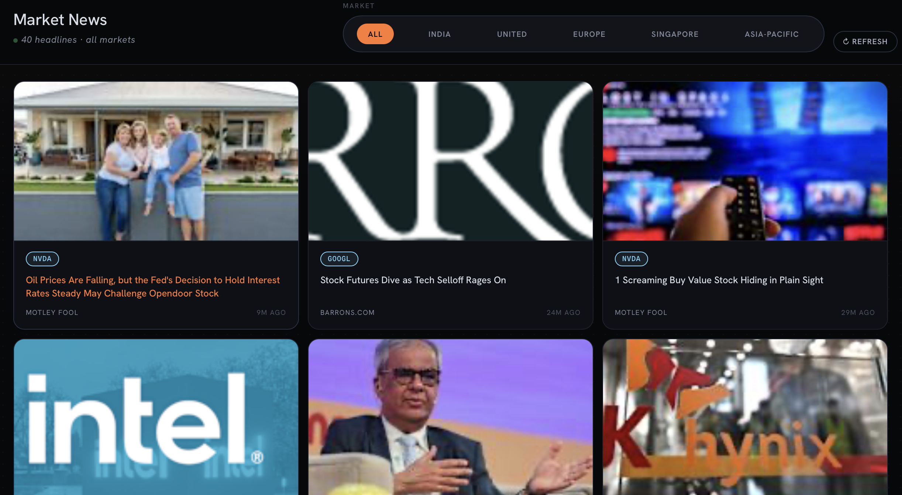

Meridian
A full-stack, server-rendered equity platform: a 266-name global multi-factor screener, a transparent math-backed recommendation engine, live market monitors, a goal-based planner, and a sourced catalyst watchlist — built on free, keyless market data.
Overview
Meridian takes a global universe of ~266 large- and mid-cap stocks, engineers fundamental + technical factors, ranks them with a cross-sectional multi-factor model, and layers on what a real investor actually needs: actionable recommendations with the math shown, live prices, a personal plan, and a record of real-world catalysts.
Everything is server-rendered Flask with a hand-built design system — no framework, no build step — charts rendered as pure-Python inline SVG.
Educational project — not financial advice. Market data is delayed / EOD or synthetic where live sources are unavailable.
Screenshots
click any image to enlarge






Key features
- Global multi-factor screener — 266 names across five regions, scored on five factor pillars: value, quality, momentum, growth, safety.
- Cross-sectional z-scores — winsorized, orientation-aware z-scores blended into a composite and mapped to an intuitive 0–100 percentile.
- Math-backed Buy Signals — expected return via Grinold's Fundamental Law, fair value & upside, a conviction gate, and mean-variance position sizing.
- Live market monitors — an index board (Nifty, Sensex, S&P 500, Nasdaq, FTSE, DAX, Nikkei, Hang Seng, STI) plus live "% to target" on cards.
- Goal-based planner — a model portfolio in your base currency with FX normalization, dividend projection, and a SIP goal projection — persisted in SQLite.
- Sourced catalyst watchlist — dated, factual market events; confirmed and rumored items kept strictly separate, each linked to its source.
- Per-stock deep dive — recommendation breakdown, factor bars, trailing returns, a weekly candlestick + volume chart (inline SVG), and news.
- Framework-free & keyless — server-rendered Jinja, hand-built CSS, inline-SVG charts, running on free Yahoo Finance + FRED data.
Tech & quant methods
- Cross-sectional, winsorized factor z-scores with explicit orientation.
- Grinold's Fundamental Law to turn a standardized score into expected excess return.
- Relative valuation (peer-median multiples) for fair value / upside.
- Mean-variance position sizing with iterative, feasibility-aware weight caps.
- Multi-currency FX normalization (including pence-quoted GBp).
- Goal projection with a bisection solver for the required return.